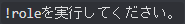

Yoppyチャンネルマネージャーヘルプ
よっぴーしすてむヘルプ|Yoppyチャンネルマネージャー
セットアップ
mkchの設定の方法です。
1.チャンネル作成コマンドを実行できるチャンネルを指定する
y!mkchsettingコマンドで指定できます。
必要な設定者の権限:チャンネル作成・編集・削除の権限
使い方:
y!mkchsetting [A] [B]
Aには複数作成できるようにするかどうかをyesかnoで、
Bには作成したチャンネルを削除できるようにするかをyesかnoで
※現在、Aがno、もしくはBがyesだとAがno、Bがyesになる問題が発生しています。
ただ、通常の使い方としてAがyes、Bがnoの使い方を想定しているため、修正する優先度は下です。
これとは別の使い方をする場合は、DMで言ってください。すぐに修正します。
2.役職を作成する。
このままで!mkchを使うと、というエラーが出ます。
なので、このエラー通りに!roleコマンドを実行しましょう。
そうすると、担当者というロールが作成されます。
この役職を付けていると、作成されたチャンネルが見えるようになります。
これで完了!
チャンネルの作り方
!mkchというコマンド、もしくは/mkchというコマンドを実行するとことで、チャンネルが作れます。
設定したチャンネルでしか作成されず、設定したチャンネルと同じカテゴリに作成されます。